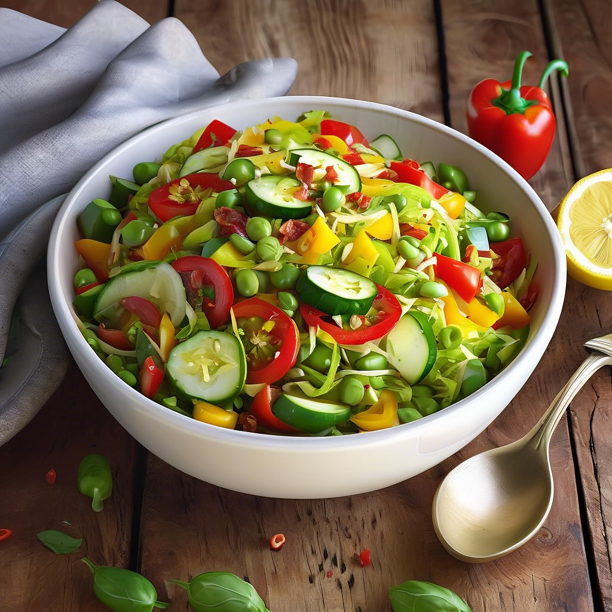

Ricette di stagione a base di legumi

📅 5 Luglio 2025
Perfetta per pranzi estivi leggeri. Si conserva in frigorifero fino a 2 giorni.
📅 July 5, 2025
Perfect for light summer lunches. Keeps refrigerated up to 2 days.
📅 5 de Julio de 2025
Perfecta para almuerzos veraniegos ligeros. Se conserva en la nevera hasta 2 días.
📅 5 de Julho de 2025
Perfeita para almoços de verão leves. Conserva-se no frigorífico até 2 dias.
📅 5. Juli 2025
Perfekt für leichte Sommeressen. Im Kühlschrank bis zu 2 Tage haltbar.
📅 5 Ιουλίου 2025
Ιδανική για ελαφριά καλοκαιρινά γεύματα. Διατηρείται στο ψυγείο έως 2 ημέρες.